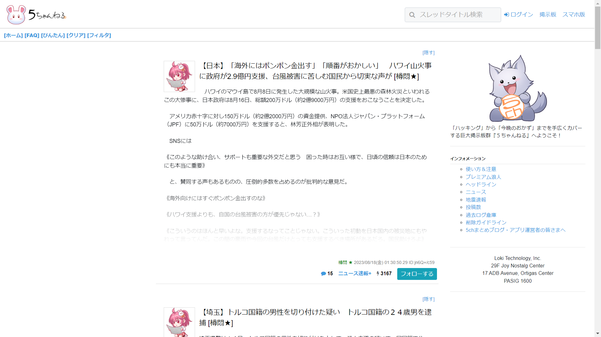
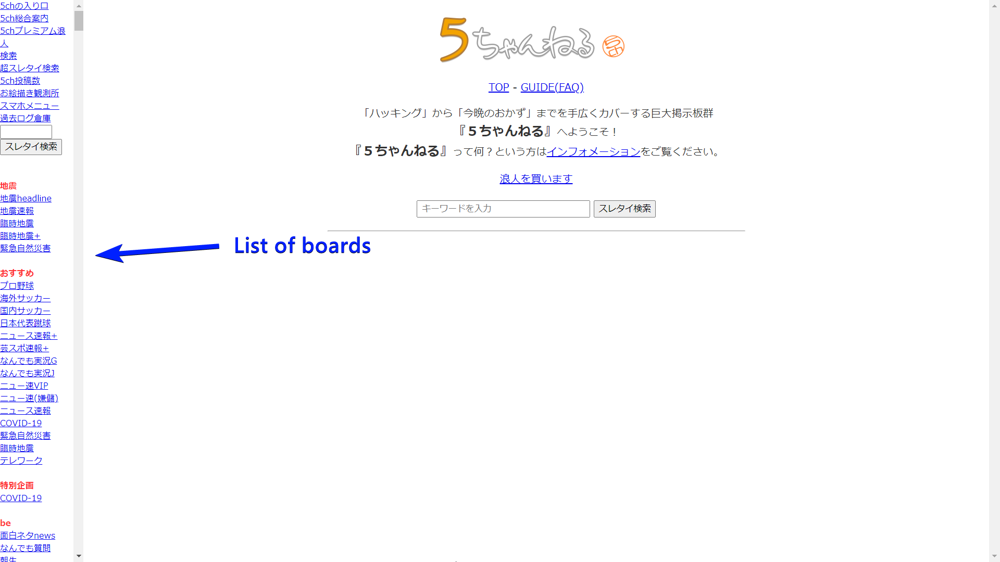
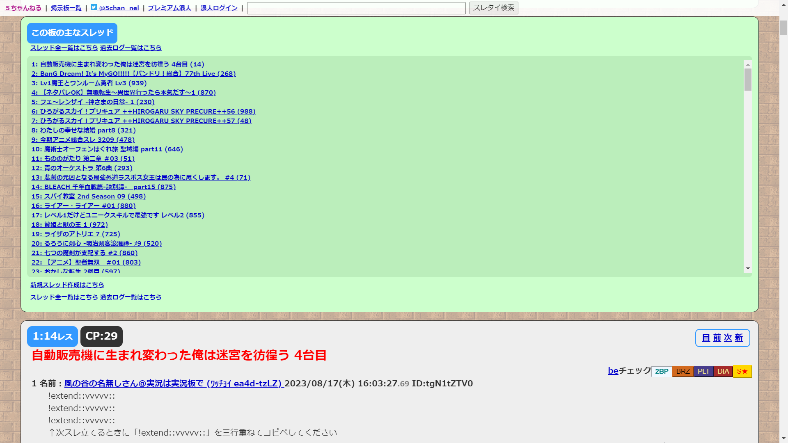
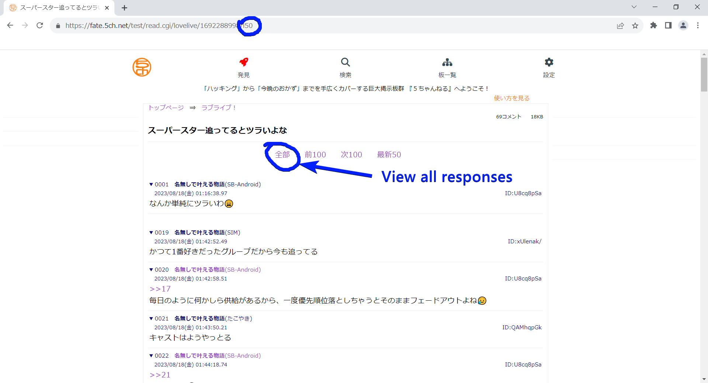
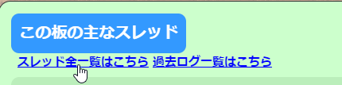
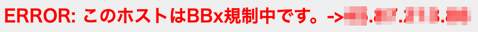

How to use 5ch / 2ch¶
2channel (Japanese: ２ちゃんねる) (New name: ５ちゃんねる) is a Japanese anonymous text bulletin board. You can think of it as the Japanese equivalent to something in between Reddit and 4chan, with a more toxic userbase than Reddit and varying levels of moderation. You can use this to burn away time instead of looking at English sites. The site design is very questionable by today's standards, and I will be constantly calling it "awful" in this article. The awful site design, combined with the lack of user friendliness, make the site very hard to use, especially for people still learning Japanese. This article will try explaining how to use 2ch/5ch in your browser.
So what is this site actually called?¶
"にちゃんねる" is how it is widely known. "にちゃん" is also its shorter name. Despite this, the site was renamed to 5channel due to some some circumstances. Despite this, people still refer to the site as にちゃんねる. It is often written as 2ch, or ２ちゃんねる, or ２ちゃん. However, there is a different site, known as Futaba Channel, that is known as 2chan, that is not related to 2channel. Very confusing.
It is officially 5ch now, but I will be referring to the site as 2ch/5ch from now on.
URL¶
Front Page¶

What! What part of the site design is awful, you say?
Well first, that screenshot is actually taken with an ad-blocker enabled. The site without an ad-blocker has too many ads to be a pleasant experience.
And second, the site design is actually very inconsistent, the site design changes across different pages. Only the front page looks good, lol.
The front page displays popular threads from the ニュース速報+ (a news board) and 野球実況板 (a 実況 baseball board).
While the front page has quite mundane content, there are actually a ton of different boards for different interests. You can access the list of boards by clicking the 掲示板 button on the top left.
Boards¶

There are a LOT of boards, it is more comparable to Reddit subreddits than say, boards on 4chan.
Boards have a lot of categorization on 2ch/5ch, this means you can only read stuff you are interested in, but it can also result in a lot of boards becoming dead, as the categorization is too meticulous at times.
You may want to try using Ctrl+F to try finding something related to your interests. You can try inputting a keyword (of course, in Japanese!) into the search bar, there is bound to be a thread about it, and from there you can learn what is the suitable board for your type of interests.
There is a page that displays links to every single board on a single page: 掲示板リスト.
Boards I often view personally are the ラブライブ！ and 声優 boards.
Board Page¶

The first box of the board page contains rules, and info about the board.

You can see the list of threads in the next box. This is how you will find threads. The number in brackets after the thread name is how many responses the thread has.
If you scroll further, you can see previews of the latest bumped threads. This will show the first post (the OP), and the last 50 posts.
The "レス" refers to how many responses the thread has. The "CP" refers to how many clicks recently the thread has.
(Latest bumped threads view) You need to click on 全部読む to view the entire thread.

When you click on a thread through the thread list, by default 2ch/5ch will display the first post and the latest 50 posts. You need to click on 全部, or remove /l50 from the URL to view the entire thread.

Thread List Dedicated Page¶
There is a dedicated page for each board where you can view a list of all threads, without any other bloat. You can access it by clicking on スレッド全一覧はこちら at the top of the thread list, or by editing the URL to include subback.html at the end.

The default view is not very good, but you should click 表示スタイル切替 and get a view you like.
Imgur Links¶
You may notice a lot of people posting Imgur links. This is because 2ch/5ch is a text bulletin board that does not support uploading images. The only way to share images is to use external image hosts.
There are browser extensions that aim to improve the 2ch/5ch experience that feature embedding images and tweets. The one I use personally is 5chutil.
Responses¶
Responses work in nearly the same way as replies do on sites like 4chan. The oldest responses are displayed first, and the newest displayed last.
However, while replies in 4chan threads are counted against all replies across all threads across the entire board (this is why replies have really high numbers), responses in 2ch/5ch threads are counted against how many responses are in that one thread.
On 2ch/5ch, the way people respond to other posts is to refer to the number with >>. For example, replying to the first post will be >>1, replying to the 19th post would be >>19.
On 2ch/5ch, threads will be automatically archived when they reach 1000 responses. You can view those archived threads in the 過去ログ. Archived threads cannot be replied to.
過去ログ¶
The 2ch/5ch 過去ログ is where archived threads go. You can view the 過去ログ by clicking on the 過去ログ一覧はこちら button at the top of the thread list.

Posting¶
You can post on 2ch/5ch by scrolling right to the bottom of the thread and typing in the text box.

When posting, make sure you post with courtesy and respect! Follow the 2ch/5ch etiquette and the rules of the board you're posting on. You can easily get banned for trolling on 2ch/5ch and it is really not pretty trying to get unbanned or evade your ban!
It is best practice to sage! when posting!
You can start new threads by going to the board page and scrolling to the bottom where it says 新規スレッド作成.

Posting Culture¶
Since posting is anonymous, posts may get toxic. People may throw insults around. I think it is nothing compared to 4chan, though. Also, it varies a lot depending on what board you are posting on. Boards like the アニメ board have good moderation and does not really get toxic. On the other hand, a sh*thole such as ニュー速(嫌儲) is pretty much always the underbelly of the Japanese net.
People can and will respond negatively to poor quality posts you make and threads you create, and there will be haters everywhere bashing the things you like, it is important to not take these negative responses to heart, and learn to get over them.
Despite this, 2ch/5ch is much better regulated than places like 4chan, because 2ch/5ch has more frequent bans, more severe troll prevention measures and very strict limits on what IP addresses can post.
How to post outside of Japan¶

Non-Japanese IPs cannot post on 2ch/5ch.
2ch/5ch is very strict on what IP addresses can post on 99% of boards (大使館 and Anarchy boards you can post freely).
You can view 2ch/5ch just fine outside of Japan, however you can only post with approved Japanese ISP's and mobile carriers. This means usual VPN's don't work, as the ISP needs to be approved too.
However there are still ways to get over the posting restriction, but it can get tricky.
Method 1: Residential IP address VPN¶
This is the only way I was ever to post on 2ch/5ch, however it can be tricky to get your hands on one, and depending on the service you are using you will constantly be rolling the gacha and seeing what IP addresses haven't already been used by others on 2ch/5ch and already been banned. It is pretty much a cat and mouse game with the moderators of 2ch/5ch.
Tuxler¶
Tuxler is a VPN service that lets you use residential IP addresses. It works quite well when you figure out how to use it.
I recommend you download the Windows app, not the Chrome extension.
Tuxler Windows App.
When I tried directly connecting to a Japan location address in Residential mode, it didn't work.
However, I realized the software is bugged and there is a workaround to this.
You need to first connect to a Datacenter location, THEN a Residential location. (You can stack connections.)
So the steps are as follows,
1. Connect to the nearest Datacenter location, (France for me, as I am in the UK.)
2. Then switch to the Residential tab and choose Japan.
3. When the flag at the bottom changes to Japan you know it worked.
4. Try accessing ipleak.net to see what your ISP displays as. It should be something like KDDI, NTT, au, SoftBank, Docomo etc.
5. When you reach the daily limit, connect to another residential VPN first before connecting. (it remembers your original IP)
WARNING: Tuxler lets other people use your IP address as a residential VPN too. Make sure you close the app fully (gone from the taskbar icons and Task Manager completely) when you finish using it.
筑波vpn¶
Also known as SoftEther, or VPN Gate. Out of courtesy for the contributors I will not go into detail but this is also an option.
Dedicated Residential Proxy¶
This is quite an expensive option. There are proxy providers aimed at people that do web scraping that provide undetectable residential proxies. A lot of these providers have Japan location residential proxies too. Your safest and most reliable approach to posting on 5ch outside of Japan would be this, but it can be quite costly. Make sure you don't buy an "ISP Proxy"! These are just datacenter IPs with a registered dummy ISP. You need a residential or mobile proxy.
Method 2: Buy 浪人¶
2ch/5ch 浪人 (ronin) is like a 2ch/5ch Premium; you have more perks such as heightened spamming abilities and you can post from any IP address. You can buy it here. I am not joking, that is seriously the actual page to buy 浪人, lmao.
But here's the catch: you need Japanese payment details.
専用ブラウザ 2ch/5ch dedicated browsers¶
It is usually not recommended to use a web browser to use 2ch/5ch. This is because 2ch/5ch works by you (client) requesting the data (.dat) of the thread and the server making a HTML web page for you. This can cause extra load on the server. That is why 2ch/5ch dedicated browsers are recommended, as they can display threads in a more native way to the thread .dat.
Some boards even have restrictions in place where you can only post on a dedicated browser.
The major downside of this for Japanese learners is that you can't use Yomichan in them.
Recommended 2ch/5ch専用ブラウザ:
Windows: Siki
Android: Chmate
iOS: BB2C
Improve the web browser 2ch/5ch experience: 5chutil¶
You can improve the web browser 2ch/5ch experience using the 5chutil extension.
Chrome
Firefox
Greasyfork Userscript
This has a lot of useful quality of life improvements. Including:
- Improved thread list view, featuring sorting by name, no. of responses(レス), CP(勢い) and date.
- Imgur and Twitter embeds
- Replies by a single user can be displayed in a list when you hover over the number next to their name.
- Replies spanning across multiple replies can be displayed in a list when you hover the >>.
- Add "NG Words" by highlighting text and clicking the button. This can filter stuff you don't want to see.
- Able to hide replies of posters you don't like by clicking the + next to their ID.
Recommended way to search 2ch/5ch¶
I recommend using Google with the search term site:5ch.net <keyword>.
結局 No point of using 2ch/5ch?? / まとめサイト introduction¶
2ch/5ch can have a lot of interesting posts, however a lot of threads may be クソスレ (crappy threads) and a lot of responses in threads may be クソレス (crappy responses). It can also be hard to find things on 2ch/5ch.
That is where まとめサイト's come in. These sites take interesting threads and only the interesting responses, and put them on a 3rd party site. These sites are also usually specialized in only posting about one topic. For example, there is a Love Live! 2ch matome site that takes threads from the ラブライブ！ board. Here's ピコピコ通信, a まとめサイト that posts threads from video game related 2ch/5ch boards. Here's アルファルファモザイク which is more like a general まとめサイト.
In my opinion, まとめサイト's are the real Japanese alternative to mindlessly scrolling something like Reddit. You can spend hours being entertained just looking at まとめサイト's.
There is a まとめサイト for pretty much any hobby / interest, just search on Google for them. You can see a まとめサイト recommendation list here:
【完全版】おすすめまとめサイト30選！2chなどジャンル別に調査！
Notorious 2ch/5ch boards¶
The following boards are known for being bad places to be around. These are usually in the 雑談系２ category of boards.
You should avoid these, but if you are one of those people, then feel free...
- なんでも実況(any)
- ニュー速VIP
- ニュー速(嫌儲)
- なんでもあり
- 最悪
- 学歴
The NSFW (BBSPINK) versions of ニュー速 and なんでもあり can only be accessed with a Japanese IP address.
Talk.jp¶
URL: https://talk.jp/
Talk.jp is a spin off of 5ch that was made recently due to disagreements between the terrible owners of 5ch and the owner of the developer of the most popular 2ch/5ch専用ブラウザ, Jane Style. The developer of Jane Style used to have ads placed on the 5ch website, however the owners decided to remove his ads, resulting in him losing that source of income. In response to this, the developer of Jane Style created Talk.jp and removed 5ch support from Jane Style, and made it into a Talk.jp専用ブラウザ. Jane Style was an extremely popular 5ch専用ブラウザ, which means everyone that downloaded the update will no longer be browsing 5ch, but Talk.jp. With that being said, this is not really stealing that much traffic from 5ch.
Talk.jp has the most popular boards of 5ch, and features an easier to use web design.
Terminology¶
スレ¶
Thread.
レス¶
Response.
板¶
Board.
sage¶
Usually when you post on 2ch/5ch, the thread will get bumped to the top of the board. You can stop this by putting sage in the Email field when posting. Posting without sage'ing is generally frowned upon among 2ch/5ch users. Names will appear purple for users that posted with sage.
自治¶
Basically moderation on 2ch/5ch. Well moderated boards have "自治スレ"'s where you complain to the mods about being moderated.
実況¶
実況 on 2ch/5ch refers to discussing an event or something while it is happening. This has often been frowned upon by 2ch/5ch users, therefore most boards disallow 実況'ing by default. Boards that do allow it, have 実況 in the name or 実況OK/実況可 written in the rules)
dat落ち¶
When a thread reaches 1000 replies and is then archived. 2ch/5ch thread raw data is stored in .dat files. Therefore, the dat "falls".
VIP¶
Originally 20 years ago, this meant boards that got special treatment, but now this kind of has a "containment" connotation to it because the boards that have "VIP" in the name are really notorious for their posts. Examples include ニュー速VIP.
コテハン¶
2ch is usually anonymous, however you can post with a name. This is called コテハン.
トリップ/酉/鳥¶
This is similar to コテハン, but a トリップ is made by a special string of characters that only you should know, that becomes another string of characters, this is your トリップ. People may want to post with a トリップ when they want to be specially identified.
!extend::vvvvv::¶
This is a command you can use in the OP of a 2ch/5ch thread to enable forced コテハン mode. This is a troll prevention measure because it means each member can be identified with a "ﾜｯﾁｮｲ" followed by a special code. Well-moderated boards often have this as a requirement for all threads. You also often see this in multiple part threads with templates for the OP. ID's on 2ch reset when the date changes or when you post from a different IP address, so IDs aren't enough. People will post multiple lines of the string !extend::vvvvv:: to remind others to not forget to post it when they make the new OP when the thread dat落ち's.
A more severe version of this with more v's displays each poster's IP address, however this is more rare.
ﾜｯﾁｮｲ¶
What gets displayed next to your name along with a special code when you post in threads that have !extend::vvvvv:: in the OP.
ROMる¶
(Read Only Memory). Lurking. This is what you will be doing.
AA¶
ASCII art. Also includes Shift-JIS art.
イッチ¶
The person who posted the OP. From ">>1"
人大杉¶
An error message that sometimes displays when you try viewing something in the 2ch過去ログ. It's a 誤字 version of 人多過ぎ. It appears when the server that HTML'ify's the .dat's in the 過去ログ is overloaded.
アフィ / アフィカス¶
アフィ refers to affiliate まとめ sites. These sites take 2ch/5ch過去ログ threads and put them on まとめ sites. These sites have ads all over them, and try to farm clicks which means they are earning money from 2ch/5ch threads. This is extremely frowned upon among 2ch/5ch users, so much so that 2ch/5ch owners copyrighted all the threads on their website, making it illegal to post their threads on other sites. Despite this, まとめ sites exist and they are not going away. The カス is a Japanese word meaning something like "scum".